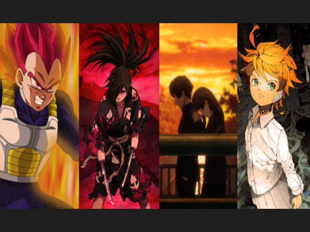
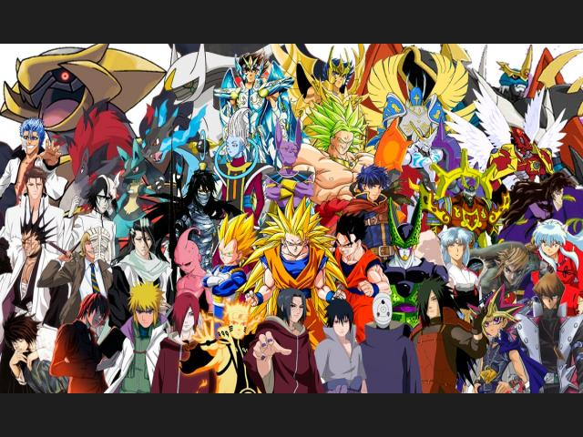
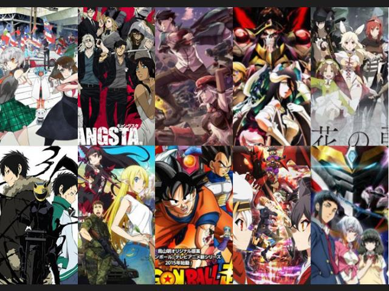
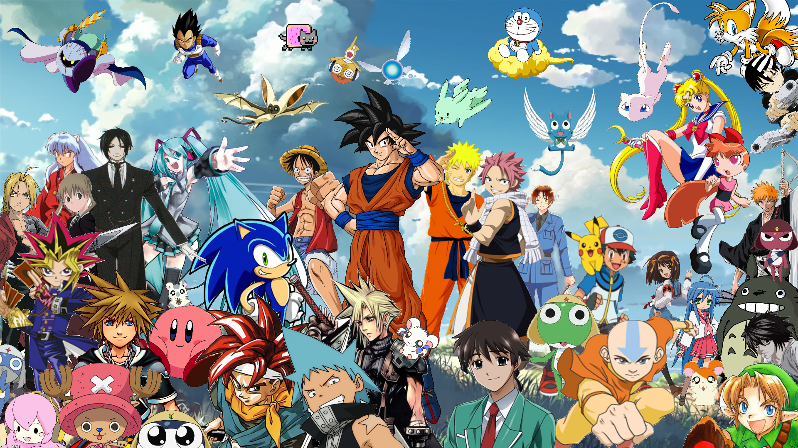

NOTICIAS DEL ANIME
Te traemos los mejores top's de anime; aquí encontraras todo lo que te interesara.MEJORES ANIMES DEL 2019  MEJORES ANIMES DE ACCIÓN  MEJORES ANIMES CORTOS 
¿QUE ES EL ANIME?
También escrito ánime y animé, es un término que engloba a la animación tradicional o por computadora de procedencia japonesa.
El anime es un fenómeno cultural y de entretenimiento que goza de gran popularidad a nivel internacional. Se trata de un arte que está vinculado al manga (las historietas japonesas), el cosplay (el uso de disfraces) y otras disciplinas y tendencias.
Las obras de anime solían dibujarse manualmente, aunque en los últimos años se popularizaron las creaciones digitales. Aunque existen múltiples trabajos de anime con diferentes características, hay un estilo típico de la animación japonesa que empezó a forjarse en la década de 1960.
Los personajes con ojos muy grandes, labios finos y cabello extraño constituyen uno de los rasgos más salientes del anime. La expresividad de los rostros, por otra parte, diferencia a estos dibujos de los más habituales en la animación occidental. Además de todo lo indicado, hay que resaltar otra serie de datos de interés relevantes acerca del anime, tales como los siguientes: